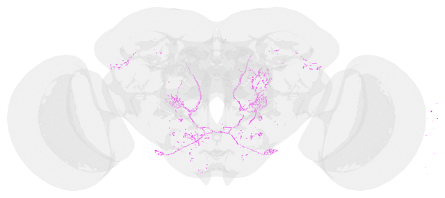
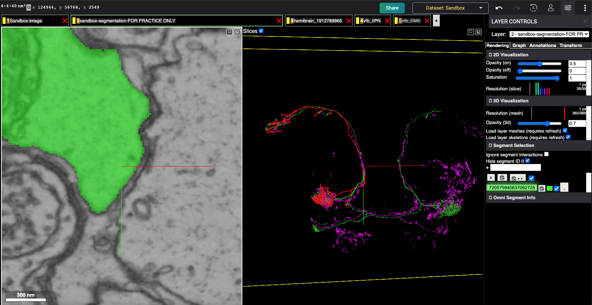

Co-plotting split-gal4 line, hemibrain skeleton with flywire dataset¶
This section contains example of split-gal4 line, skeleton from hemibrain dataset and co-plotting with a flywire instance¶
Import neccesary library modules now¶
[1]:
import navis
import fafbseg
import flybrains
[2]:
import os
import numpy as np
import pandas as pd
import copy
[3]:
import trimesh as tm
[4]:
import navis
from vfb_connect.cross_server_tools import VfbConnect
[35]:
from pyroglancer.localserver import startdataserver, closedataserver
from pyroglancer.flywire import flywireurl2dict, flywiredict2url, add_flywirelayer, set_flywireviewerstate
from pyroglancer.utils import pointcloud2meshes, obj2pointcloud
[6]:
import navis.interfaces.neuprint as neu
from navis.interfaces.neuprint import NeuronCriteria as NC, SynapseCriteria as SC
Get the Split-Gal4 line¶
Select the gal4 line you are interested in for example, here I choose the line R65G01 from the neuronbridge website here
Convert the gal4 line to either a mesh ( a bit efficient) or to a skeleton (involves manual processing)¶
Using a mesh object: Go to the virtualflybrain site like here and get the vfb id here: VFB_00023647
Using a skeleton object: 1) Download the above line as .nrrd by following the link to the virtualflybrain site like here 2) Use the .nrrd file in FiJi and skeletonise using the simple image tracer as illustrated in this video here 3) Save the skeletonised file as .swc format
The rest of the tutorial only involves the mesh object based co-visualisation
[7]:
BASE_DIR = os.path.dirname(os.path.dirname(os.path.dirname(os.path.dirname(os.path.realpath("__file__")))))
BASE_DIR
[7]:
'/Users/sri/Documents/Python/pyroglancer'
[8]:
# vfb_neuron = navis.read_swc(swc_files, delimiter='\s+',units = 'um')
# swc_files = os.path.join(BASE_DIR, 'data/snt_tracings/VFB_00023647_snt_skel-000.swc')
# navis.health_check(vfb_neuron)
# vfb_neuron = navis.graph.clinic.merge_duplicate_nodes(vfb_neuron)
[9]:
#utility function for transforming vfbids to meshes
def vfbid2mesh(vfb_id):
vc = VfbConnect()
vcinfo = vc.neo_query_wrapper.get_anatomical_individual_TermInfo([vfb_id])
image_url = vcinfo[0]['channel_image'][0]['image']['image_folder'] + 'volume.obj'
print('point cloud located at: ', image_url)
pcd = obj2pointcloud(image_url)
vfb_mesh = pointcloud2meshes(pcd, algorithm='rollingball')
return vfb_mesh
[10]:
vfbmeshes_dict = {}
[11]:
vfbmeshes_dict['VFB_00023647'] = vfbid2mesh('VFB_00023647')
point cloud located at: http://www.virtualflybrain.org/data/VFB/i/0002/3647/VFB_00101567/volume.obj
The mesh is not convex
[12]:
vfbmeshes_dict['VFB_00020203'] = vfbid2mesh('VFB_00020203')
point cloud located at: http://www.virtualflybrain.org/data/VFB/i/0002/0203/VFB_00101567/volume.obj
The mesh is not convex
[13]:
jrc2018u_mesh = navis.Volume(flybrains.JRC2018U.mesh)
[14]:
vfbmeshes_dict['VFB_00023647'].name = 'ilPN'
vfbmeshes_dict['VFB_00023647'].color = 'magenta'
[15]:
vfbmeshes_dict['VFB_00020203'].name = 'DM5'
vfbmeshes_dict['VFB_00020203'].color = 'red'
[16]:
fig, ax = navis.plot2d([vfbmeshes_dict['VFB_00023647'],jrc2018u_mesh], method='2d')
fig.gca().invert_yaxis()
fig
[16]:

Set configurations to fetch from data from neuprint¶
[17]:
neuprint_token = os.environ['NEUPRINT_APPLICATION_CREDENTIALS']
client = neu.Client('https://neuprint.janelia.org/', dataset='hemibrain:v1.1', token=neuprint_token)
client
[17]:
Client("https://neuprint.janelia.org", "hemibrain:v1.1")
Get the matching skid from neuprint using the info from neuronbridge website like here¶
[18]:
hemibrain_skel = neu.fetch_skeletons(1912789965, heal=1000, max_threads=30)
INFO - 2021-06-07 08:45:48,706 - utils - NumExpr defaulting to 8 threads.
Transform them to flywire space¶
[19]:
#vfb_neuron=navis.xform_brain(vfb_neuron,source='JRC2018U', target='FLYWIRE')
[20]:
vfb2flywiremeshes = {}
[21]:
vfb2flywiremeshes['VFB_00023647'] = navis.xform_brain(vfbmeshes_dict['VFB_00023647'],source='JRC2018U', target='FLYWIRE')
Transform path: JRC2018U -> JRC2018F -> FAFB14um -> FAFB14 -> FAFB14raw -> FLYWIREraw -> FLYWIRE
[22]:
vfb2flywiremeshes['VFB_00020203'] = navis.xform_brain(vfbmeshes_dict['VFB_00020203'],source='JRC2018U', target='FLYWIRE')
Transform path: JRC2018U -> JRC2018F -> FAFB14um -> FAFB14 -> FAFB14raw -> FLYWIREraw -> FLYWIRE
[23]:
hemibrain2flywire_skel=navis.xform_brain(hemibrain_skel,source='JRCFIB2018Fraw', target='FLYWIRE')
Transform path: JRCFIB2018Fraw -> JRCFIB2018F -> JRCFIB2018Fum -> JRC2018F -> FAFB14um -> FAFB14 -> FAFB14raw -> FLYWIREraw -> FLYWIRE
Start the dataserver to host precomputed data¶
[37]:
startdataserver()
Closing server at http://127.0.0.1:8000
Cleaning directory at /private/var/folders/_l/lrfvj_8j3ps0c37ncbr3c8dh0000gn/T/tmpd8yw3_fb
Serving data from: /var/folders/_l/lrfvj_8j3ps0c37ncbr3c8dh0000gn/T/tmph11kfa8u
Serving directory at http://127.0.0.1:8000
Get the url from flywire to append data onto¶
[38]:
shorturl = 'https://ngl.flywire.ai/?json_url=https://globalv1.flywire-daf.com/nglstate/5169621741076480'
#This flywire segments has some stuff similar (in blue), you will notice their closeness in the final plot
Add bodyids to flywire layers¶
[39]:
# vfb_neuron.id = 1234
# matchingneurons = navis.NeuronList(vfb_neuron)
# matchingneurons += hemibrain2flywire_skel
[40]:
tmpviewer = add_flywirelayer(flywireurl2dict(shorturl), layer_kws = {'type': 'skeletons',
'source': hemibrain2flywire_skel,
'color': ['red'],
'name':'hemibrain_1912789965'
#'space': 'FAFBv14.1',
#'annotationstatetype': 'precomputed'
})
#'alpha': 0.3, doesn't work yet in skeleton layers..
/private/var/folders/_l/lrfvj_8j3ps0c37ncbr3c8dh0000gn/T/tmph11kfa8u/precomputed/hemibrain_1912789965/skeletons/1912789965
creating: /private/var/folders/_l/lrfvj_8j3ps0c37ncbr3c8dh0000gn/T/tmph11kfa8u/precomputed/hemibrain_1912789965/skeletons/seg_props
{'1912789965': ['#ff0000']}
flywire url at: https://ngl.flywire.ai/?json_url=https://globalv1.flywire-daf.com/nglstate/5828375906091008
[41]:
vfb2flywiremeshes['VFB_00023647'].id = 23647
vfb2flywiremeshes['VFB_00020203'].id = 20203
[42]:
vfb2flywiremeshes
[42]:
{'VFB_00023647': <navis.Volume(name=None, id=23647, color=(0.85, 0.85, 0.85, 0.2), vertices.shape=(12213, 3), faces.shape=(12861, 3))>,
'VFB_00020203': <navis.Volume(name=None, id=20203, color=(0.85, 0.85, 0.85, 0.2), vertices.shape=(30152, 3), faces.shape=(30941, 3))>}
[43]:
tmpviewer = add_flywirelayer(flywireurl2dict(tmpviewer), layer_kws = {'type': 'volumes','name': 'vfb_' + vfbmeshes_dict['VFB_00023647'].name,
'source': vfb2flywiremeshes['VFB_00023647'],'color': 'magenta'})
mesh/23647
Seg id is: 23647
Full filepath: /private/var/folders/_l/lrfvj_8j3ps0c37ncbr3c8dh0000gn/T/tmph11kfa8u/precomputed/vfb_ilPN/mesh/23647
creating: /private/var/folders/_l/lrfvj_8j3ps0c37ncbr3c8dh0000gn/T/tmph11kfa8u/precomputed/vfb_ilPN/mesh/segment_properties
creating: /private/var/folders/_l/lrfvj_8j3ps0c37ncbr3c8dh0000gn/T/tmph11kfa8u/precomputed/vfb_ilPN/mesh/segment_names
flywire url at: https://ngl.flywire.ai/?json_url=https://globalv1.flywire-daf.com/nglstate/5341474052898816
[44]:
# if you want to add the next vfb neuron..
tmpviewer = add_flywirelayer(flywireurl2dict(tmpviewer), layer_kws = {'type': 'volumes','name': 'vfb_' + vfbmeshes_dict['VFB_00020203'].name,
'source': vfb2flywiremeshes['VFB_00020203'],'color': 'blue'})
mesh/20203
Seg id is: 20203
Full filepath: /private/var/folders/_l/lrfvj_8j3ps0c37ncbr3c8dh0000gn/T/tmph11kfa8u/precomputed/vfb_DM5/mesh/20203
creating: /private/var/folders/_l/lrfvj_8j3ps0c37ncbr3c8dh0000gn/T/tmph11kfa8u/precomputed/vfb_DM5/mesh/segment_properties
creating: /private/var/folders/_l/lrfvj_8j3ps0c37ncbr3c8dh0000gn/T/tmph11kfa8u/precomputed/vfb_DM5/mesh/segment_names
flywire url at: https://ngl.flywire.ai/?json_url=https://globalv1.flywire-daf.com/nglstate/4650243190685696
[45]:
#tmpviewer,shorturl = set_flywireviewerstate(tmpviewer, axis_lines=False, bounding_box=False)
flywire url at: https://ngl.flywire.ai/?json_url=https://globalv1.flywire-daf.com/nglstate/5829114439139328
127.0.0.1 - - [07/Jun/2021 08:52:21] "GET /precomputed/hemibrain_1912789965/skeletons//info HTTP/1.1" 200 -
127.0.0.1 - - [07/Jun/2021 08:52:21] "GET /precomputed/vfb_ilPN/mesh/info HTTP/1.1" 200 -
127.0.0.1 - - [07/Jun/2021 08:52:21] "GET /precomputed/vfb_DM5/mesh/info HTTP/1.1" 200 -
127.0.0.1 - - [07/Jun/2021 08:52:21] "GET /precomputed/vfb_ilPN/mesh/23647:0 HTTP/1.1" 200 -
127.0.0.1 - - [07/Jun/2021 08:52:21] "GET /precomputed/vfb_DM5/mesh/20203:0 HTTP/1.1" 200 -
127.0.0.1 - - [07/Jun/2021 08:52:21] "GET /precomputed/hemibrain_1912789965/skeletons//1912789965 HTTP/1.1" 200 -
127.0.0.1 - - [07/Jun/2021 08:52:21] "GET /precomputed/vfb_ilPN/mesh/23647 HTTP/1.1" 200 -
127.0.0.1 - - [07/Jun/2021 08:52:21] "GET /precomputed/vfb_DM5/mesh/20203 HTTP/1.1" 200 -
127.0.0.1 - - [07/Jun/2021 08:53:42] "GET /precomputed/hemibrain_1912789965/skeletons//info HTTP/1.1" 304 -
127.0.0.1 - - [07/Jun/2021 08:53:42] "GET /precomputed/vfb_ilPN/mesh/info HTTP/1.1" 304 -
127.0.0.1 - - [07/Jun/2021 08:53:42] "GET /precomputed/vfb_DM5/mesh/info HTTP/1.1" 304 -
127.0.0.1 - - [07/Jun/2021 08:53:42] "GET /precomputed/vfb_DM5/mesh/20203:0 HTTP/1.1" 304 -
127.0.0.1 - - [07/Jun/2021 08:53:42] "GET /precomputed/hemibrain_1912789965/skeletons//1912789965 HTTP/1.1" 304 -
127.0.0.1 - - [07/Jun/2021 08:53:42] "GET /precomputed/vfb_ilPN/mesh/23647:0 HTTP/1.1" 304 -
127.0.0.1 - - [07/Jun/2021 08:53:42] "GET /precomputed/vfb_DM5/mesh/20203 HTTP/1.1" 304 -
127.0.0.1 - - [07/Jun/2021 08:53:42] "GET /precomputed/vfb_ilPN/mesh/23647 HTTP/1.1" 304 -
127.0.0.1 - - [07/Jun/2021 08:55:44] "GET /precomputed/hemibrain_1912789965/skeletons//info HTTP/1.1" 304 -
127.0.0.1 - - [07/Jun/2021 08:55:44] "GET /precomputed/vfb_ilPN/mesh/info HTTP/1.1" 304 -
127.0.0.1 - - [07/Jun/2021 08:55:44] "GET /precomputed/vfb_DM5/mesh/info HTTP/1.1" 304 -
127.0.0.1 - - [07/Jun/2021 08:55:44] "GET /precomputed/hemibrain_1912789965/skeletons//1912789965 HTTP/1.1" 304 -
127.0.0.1 - - [07/Jun/2021 08:55:44] "GET /precomputed/vfb_DM5/mesh/20203:0 HTTP/1.1" 304 -
127.0.0.1 - - [07/Jun/2021 08:55:44] "GET /precomputed/vfb_ilPN/mesh/23647:0 HTTP/1.1" 304 -
127.0.0.1 - - [07/Jun/2021 08:55:44] "GET /precomputed/vfb_ilPN/mesh/23647 HTTP/1.1" 304 -
127.0.0.1 - - [07/Jun/2021 08:55:44] "GET /precomputed/vfb_DM5/mesh/20203 HTTP/1.1" 304 -
[ ]:
# # if you want to add everything in one tab (source)..
# tmpviewer = add_flywirelayer(flywireurl2dict(tmpviewer), layer_kws = {'type': 'volumes',
# 'name': 'vfb_meshes',
# 'source': list(vfb2flywiremeshes.values()),
# 'color': ['magenta','blue']})
Screenshot of the flywire instance¶
The magenta neuron is the gal4line from vfb whereas the red neuron is the corresponding match from hemibrain according to neuronbridge and the green neuron is the corresponding flywire segment that is closest match¶

Close the dataserver¶
[46]:
closedataserver()
Closing server at http://127.0.0.1:8000
Cleaning directory at /private/var/folders/_l/lrfvj_8j3ps0c37ncbr3c8dh0000gn/T/tmph11kfa8u
[ ]: